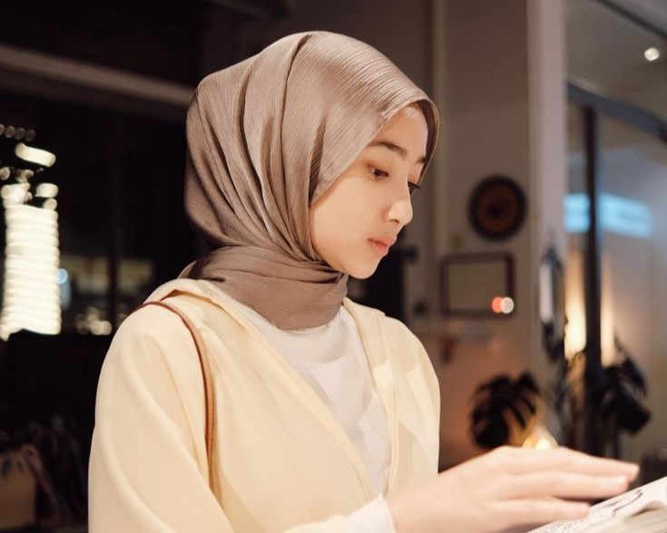

⚖️ Adab Menggunakan Media Sosial: Membangun Citra Diri yang Jujur

Media sosial adalah cerminan wajah spiritual kita. Setiap postingan, *like*, dan komentar adalah jejak digital yang tak terhapuskan. Sebagai Muslim, kita harus memastikan jejak ini membawa berkah, bukan beban hisab.
- 🕰️ Etika Waktu dan Produktivitas: Kendalikan *screen time* Anda. Media sosial adalah alat, bukan tujuan. Jangan biarkan ia merampas waktu shalat, berinteraksi dengan keluarga, atau menunaikan kewajiban. **Waktu adalah pedang yang harus digunakan dengan bijak.**
- 💡 Konten Bermanfaat: Jadikan akun Anda sumber cahaya. Postingan bukan hanya tentang kesenangan pribadi, tetapi tentang nilai tambah bagi orang lain. Apakah postingan Anda mengajak pada kebaikan (*amar ma'ruf*) atau hanya mengumbar hal sia-sia?
- ⚖️ Keseimbangan Dunia Nyata: Jangan biarkan layar memisahkan Anda dari orang-orang di sekeliling. Adab terbaik di dunia digital adalah adab yang membawa kita kembali ke keharmonisan dunia nyata. **Keluarga dan tetangga lebih berhak atas kehadiran Anda.**
🐍 Menghindari Ghibah Digital: Membasuh Lidah dan Jari dari Dosa
Ghibah digital adalah racun yang menyebar secepat koneksi internet. Menggunjing di media sosial atau grup *chat* sama seperti memakan bangkai saudara sendiri. Jari kita adalah lisan baru yang harus dijaga dari dosa.
- 🚫 Filter Tabayyun: Sebelum *share* atau *forward*, tanyakan: "Apakah ini benar? Apakah ini penting? Apakah ini bermanfaat?" Jika informasi menyerang kehormatan seseorang, hentikan penyebarannya. **Menyebarkan fitnah digital sama beratnya dengan menciptakannya.**
- 🛑 Jauhi Sarkasme & Mencela: Hindari menggunakan humor yang merendahkan orang lain, baik individu, kelompok, maupun ulama. **Menjaga kehormatan saudara Muslim adalah tanda keimanan.**
- 🧘 Mengendalikan Komentar: Jangan biarkan emosi sesaat membuat Anda menulis kata-kata pedas. Ingat, *delete* tidak menghilangkan catatan amal. Jika Anda membaca ghibah, **tinggalkan grup atau alihkan pembicaraan** (*amar ma’ruf nahi munkar*).
"Sesungguhnya orang yang paling aku cintai dan paling dekat tempat duduknya denganku pada hari Kiamat adalah orang yang paling baik akhlaknya." (HR. At-Tirmidzi)
🛡️ Privasi dan Amanah Komunikasi: Kunci Kepercayaan Umat
Dunia digital penuh dengan godaan untuk melanggar batas privasi. Dalam Islam, menjaga rahasia dan amanah adalah ciri utama seorang mukmin yang jujur. Privasi orang lain adalah **benteng kehormatan** yang wajib kita lindungi.
- 🔒 Pesan Rahasia adalah Amanah: Jika seseorang mengirimkan pesan pribadi atau menceritakan aibnya, pesan itu adalah amanah. Jangan pernah meneruskannya atau membicarakannya. **Melanggar amanah sama dengan berkhianat.**
- 👁️ Menghindari *Spying* Digital: Dilarang keras memata-matai atau mencari-cari aib orang lain (*tajassus*), baik melalui akun yang tidak dikunci atau dengan cara meretas. Allah memerintahkan kita untuk **menutup aib saudara kita.**
- 🤝 Meminta Izin Foto/Video: Sebelum mengunggah foto, video, atau *screenshot* percakapan yang melibatkan orang lain, **wajib** meminta izin eksplisit. Jika mereka menolak, hormati penolakan tersebut sebagai bentuk menjaga kehormatan mereka.